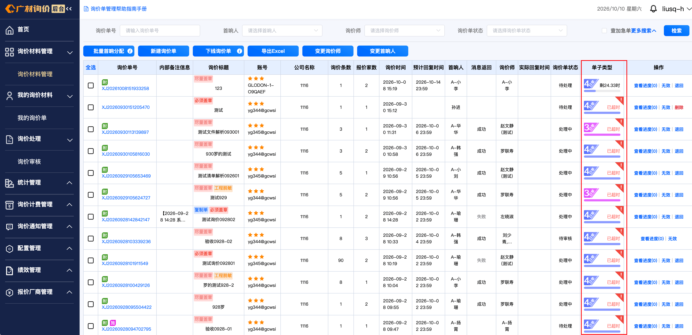
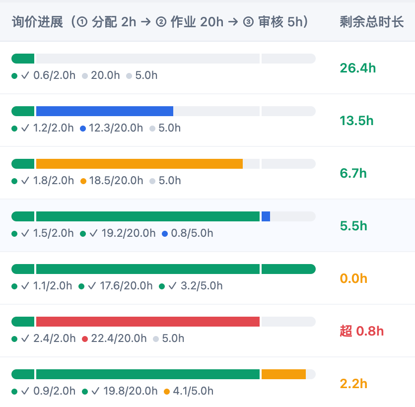
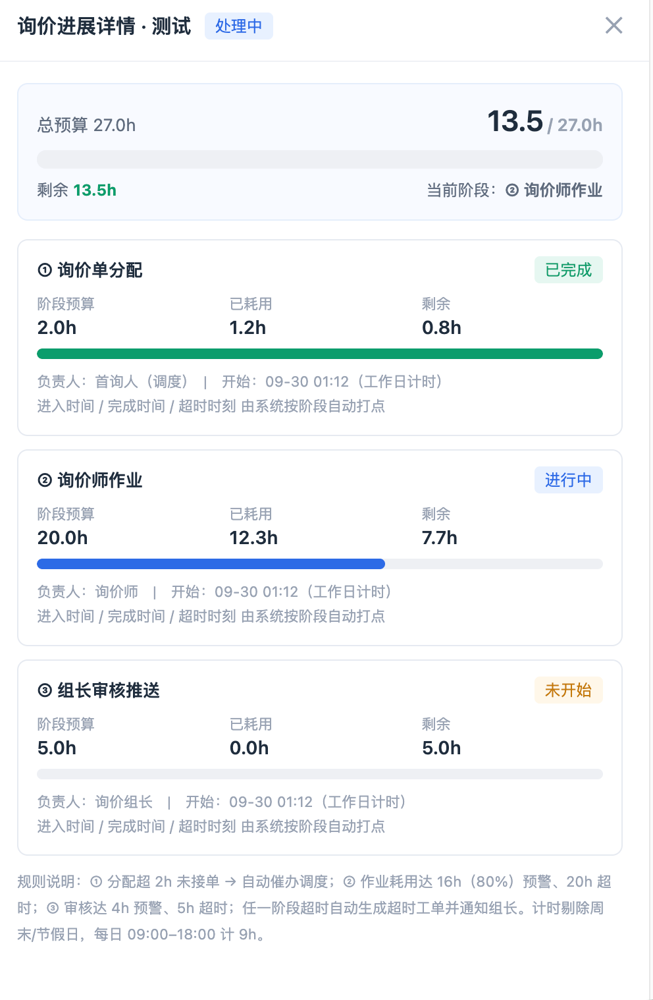

问题：当前工数产线以三日询价响应有效指标 作为业务目标，之前的单子类型的 时间维度 无法匹配现在的需求，需要调整
需求：
1.新增单子类型的时间 根据品类配置，建议处理成json格式，首批默认全部品类为 3*9=27小时制；3日的释义：3个连续的工作日，逢节假日周末跳过。每日按9小时制计算，则默认为 27小时。9-18点为准；
询价单 提交成功的时间 作为 开始时间，询价单审核通过 推送完成的时间 为 结束时间
2.新增3日制的27小时在内部 分三阶段划分进度统计，分配默认询价单分配2h，询价师作业 默认20h，组长审核推送 默认5h 分段小时可配置；
3.在2中的分阶段需要设置超时提示，按照每个阶段的80%作为阈值，超出后 进度条变红，在剩余总时长列 展示超出的 时间，其中 80%可配置；
4.点击列表中的 某一条的询价进展进度条时，侧边抽屉打开 询价进展详情，详情展示 三个子阶段的详细进度与 情况说明


核心设计方案：
1. 27h 阶段配比（可配置，顶部有配比条）
① 询价单分配：2.0h — 首询人/调度接单分配
② 询价师作业：20.0h — 报价作业主体
③ 组长审核推送：5.0h — 审核后推送客户
合计 27.0h = 3 工作日 × 9h
2. 列表新增「询价进展」列
三段式进度条：每段宽度按预算占比（7.4% / 74.1% / 18.5%），填充色表示阶段状态
每段下方显示 已耗/预算（如 12.3/20.0h），完成显示 ✓
新增「剩余总时长」列：绿色正常 / 橙色预警（≤5.4h）/ 红色超时
筛选栏增加「询价进展」下拉，可按阶段筛选
3. 详情抽屉（点击行打开）
顶部总览：27h 总进度条（三色分段）+ 已耗/剩余/当前阶段
三个阶段卡片：预算、已耗、剩余、负责人、状态，超时/预警卡片有边框高亮
底部附自动打点与催办规则说明